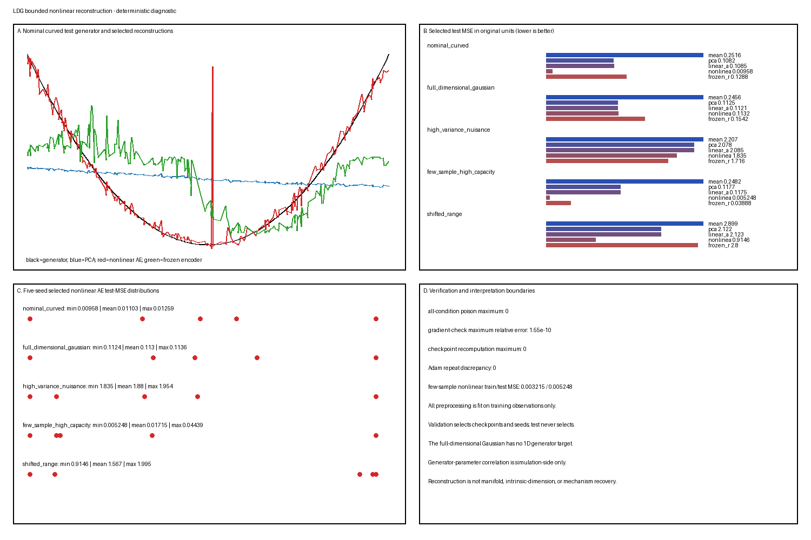

Bounded Nonlinear Reconstruction
Bounded Nonlinear Reconstruction
This L1/stable Candidate G Toy Model asks whether one fixed small nonlinear autoencoder improves held-out reconstruction over rank-matched linear methods on a known curved simulator, while controls expose full-dimensional data, nuisance variance, finite-sample capacity, and extrapolation. Numerical values are deterministic outputs under master seed 20260819; they are conditional on the declared architecture, optimizer, preprocessing, splits, and loss.
Assumed background: centered/scaled PCA, deterministic feed-forward networks, reverse-mode differentiation, full-batch Adam, and leakage-safe train/validation/test evaluation.
Question
For observations generated from one scalar through a fixed curved map into six features:
- does a one-coordinate nonlinear bottleneck improve held-out MSE over the training mean, rank-one PCA, and a trained linear autoencoder in the identical standardized metric;
- does learning the encoder improve on a frozen random nonlinear encoder with a trained decoder;
- are reconstruction, code activity, and checkpoint choice stable across five predeclared seeds;
- how do results change for full-dimensional Gaussian data, independent high-variance nuisance features, few samples with a larger architecture, and shifted test support; and
- which conclusions remain strictly about reconstruction rather than manifold structure, intrinsic dimension, unique coordinates, representation, or mechanism?
Ground truth
The ambient dimension is \(p=6\) and the scoring-only parameter is \(s\). For curved conditions,
\[ g(s)= \begin{pmatrix} s\\ s^2\\0.35\sin(2s)\\0.2s^3\\\cos(s)-\sin(1.5)/1.5\\0.4\sin(3s) \end{pmatrix}, \]
and
\[ x=g(s)+\epsilon,\qquad \epsilon\sim\mathcal N(0,0.06^2I_6). \]
Nominal train, validation, and test values use \(s\sim\operatorname{Uniform}[-1.5,1.5]\). The shifted-range test draws both signs with \(|s|\sim\operatorname{Uniform}[1.5,2.4]\), while its train and validation samples remain in range. The implementation retains \(s\) and \(g(s)\) for simulation scoring only; neither is a training target.
The full-dimensional control draws from a full-rank Gaussian whose population mean and covariance exactly match the nominal curved observable distribution, including \(0.06^2I_6\) noise. A fixed 256-node Gauss–Legendre rule on \([-1.5,1.5]\) computes those moments. The resulting covariance eigenvalues are approximately
\[ (0.85225,0.53472,0.10844,0.00563,0.00378,0.00360), \]
so the Gaussian remains full rank while having no scalar generator truth. Executable target-moment discrepancies are zero; finite sampled splits are permitted ordinary sampling deviations. A one-dimensional bottleneck applied to this condition is imposed compression, not a dimension estimate.
Generative model
Independent split sizes are:
| Condition | Train | Validation | Test |
|---|---|---|---|
| nominal curved | 320 | 160 | 240 |
| full-dimensional Gaussian | 320 | 160 | 240 |
| high-variance nuisance | 320 | 160 | 240 |
| few-sample/high-capacity | 40 | 80 | 240 |
| shifted range | 320 | 160 | 240 |
For the nuisance condition, independent Gaussian noise with standard deviation 2.5 is added to features 5–6 after the curved signal and ordinary noise. This separates standardized objective performance from original-unit error dominated by scientifically uninformative variance.
All streams use Generator(PCG64(SeedSequence(words))). Generation, training-only standardization, initialization, optimization, validation checkpointing, seed selection, scoring, plotting, and verification are separate functions.
Parameters
Every condition uses a training-fitted feature mean and population-divisor standard deviation. All deterministic methods optimize or are scored in the same transformed-coordinate Euclidean MSE, and reconstructions are also returned to original units.
The bottleneck width is one. There are no skip connections, stochastic layers, denoising, sparsity, or output nonlinearities.
| Family | Architecture | Trainable parameters |
|---|---|---|
| Trained linear AE | \(6\to1\to6\) | 19 |
| Small nonlinear AE | \(6\to8\to1\to8\to6\) | 135 |
| Frozen random encoder, ordinary conditions | frozen \(6\to8\to1\), trained \(1\to8\to6\) | 70 trained, 65 frozen, 135 total |
| Few-sample nonlinear AE | \(6\to32\to1\to32\to6\) | 519 trainable |
| Few-sample frozen encoder | frozen \(6\to32\to1\), trained \(1\to32\to6\) | 262 trained, 257 frozen, 519 total |
Five predeclared seeds are 0,1,2,3,4. Initialization is family-specific and recorded in the manifest:
- the linear AE is a PCA-warm-started optimization control: encoder/decoder weights begin at the training rank-one PCA direction plus seed-specific \(\mathcal N(0,0.02^2)\) perturbations, with zero biases;
- nonlinear AE weights use independent centered Normal draws with Glorot-like scale \(\sqrt{2/(fan_{in}+fan_{out})}\) and zero biases; and
- the frozen encoder uses fixed centered Normal weights with variances \(1/6\) and \(1/H\) and small random encoder biases, while its trainable decoder uses Glorot-like centered Normal weights and zero decoder biases.
Training uses manual full-batch Adam with \((\beta_1,\beta_2,\epsilon)=(0.9,0.999,10^{-8})\), no weight decay, and linear output. Learning rates are 0.025 for linear AE, 0.012 for nonlinear AE, and 0.015 for the frozen-encoder decoder. Each family has at most 900 epochs and patience 120. Validation selects the earliest strict minimum per seed, then the seed with minimum validation loss and lower-seed tie breaking. Test data never select an epoch or seed.
These are LDG design choices, not literature-supplied optimal settings.
Simulation
Nominal curved condition
This is the primary nonlinear-reconstruction condition. Generator-code correlations are permitted only as simulation diagnostics after fitting.
Full-dimensional Gaussian
The moment-matched full-rank Gaussian has no \(s\) or noiseless one-dimensional map. Code–\(s\), monotonicity, and generator-recovery rows are omitted. Any nonlinear reconstruction advantage remains a compression result after controlling first and second population moments.
High-variance nuisance
The first four features retain curved signal; the final two receive large independent nuisance variance. Report structural-feature and nuisance-feature MSE separately. Neither standardized nor original-unit MSE is declared universally correct.
Few-sample/high-capacity
Only 40 rows train both the 519-parameter nonlinear model and the architecture-matched width-32 frozen-encoder control with 257 frozen and 262 trained decoder parameters. Report complete train, validation, and test errors and seed variation. In this realized dataset validation selection prevents a dramatic memorization gap; this negative control remains informative even though the expected failure is not forced.
Shifted range
The model and standardizer are fitted only in range and applied unchanged outside training support. This is extrapolation, not another validation split.
Visualization
The single composite summary.png shows bounded nominal reconstructions, selected test reconstruction metrics across conditions, selected loss histories, and code-versus-\(s\) diagnostics for nominal and shifted tests.

The figure is diagnostic only. All methods use training-only standardization; validation selects checkpoints/seeds; test data do not select models. Code plots are simulation-side diagnostics, not manifold or intrinsic-coordinate evidence.
Expected behavior
- Rank-one PCA is the analytic linear reconstruction reference. A well-trained linear AE should approach its reconstructed subspace and loss (Bourlard and Kamp 1988; Baldi and Hornik 1989).
- A small nonlinear AE can improve interpolation on the curved generator without proving that an arbitrary dataset is one-dimensional or manifold-valued.
- Frozen random nonlinear features can reconstruct some structure, so their full seed distribution is necessary before crediting learned encoding.
- Full-dimensional Gaussian data provide no valid scalar-generator recovery claim even if a flexible model improves MSE.
- Standardization can prevent nuisance features from dominating the optimized metric while original-unit error remains nuisance-dominated.
- Out-of-range reconstruction and code ordering may degrade sharply despite good in-range validation.
- A larger network with few samples can overfit, but predeclared validation stopping may also prevent the intended dramatic failure. Negative controls are reported, not tuned to guarantee a story.
Parameter manipulations
| Condition | Changed assumption | Diagnostic |
|---|---|---|
nominal_curved |
none | bounded nonlinear held-out gain |
full_dimensional_gaussian |
no scalar curved generator | imposed one-code compression |
high_variance_nuisance |
large independent variance in features 5–6 | structural/nuisance and metric dependence |
few_sample_high_capacity |
40 training rows and width 32 | capacity, seed, and generalization gap |
shifted_range |
test support outside training range | extrapolation and code ordering |
No condition, architecture, seed set, optimizer budget, or noise magnitude is retuned from test results.
Sanity checks
The verifier checks:
- exact split regeneration for observations, \(s\), and noiseless curves;
- test-observation poisoning leaves standardization, all candidates, checkpoint histories, and selected seeds unchanged;
- poisoning every \(s\) and noiseless-truth array leaves all observation-only fits and reconstructions unchanged;
- PCA and the analytic linear reconstruction are identical;
- selected trained-linear-AE composite projector, subspace angle, and training MSE approach PCA within declared tolerances; failure would be labelled optimization failure;
- centered finite-difference gradients for linear, nonlinear, and frozen-decoder networks agree with analytic backpropagation;
- validation checkpoint losses and earliest-minimum epochs recompute exactly;
- validation seed selection replays exactly;
- repeated full-batch Adam training is deterministic;
- frozen encoder parameters never change;
- bottleneck shape is exactly \(n\times1\), parameter counts match architecture, and no skip path exists;
- all losses, parameters, codes, reconstructions, and metric values are finite;
- metric rows have the exact schema, nonempty labels, finite values, and unique composite keys; and
- a clean temporary regeneration produces byte-identical generated artifacts.
These checks support implementation integrity, not manifold or mechanism claims.
Failure cases
- Different metrics for PCA and AE: preprocessing or test-fitted scaling makes comparison invalid.
- Poor linear optimization called nonlinear gain: analytic PCA remains the authoritative linear baseline.
- Best test seed selection: all checkpoint and seed choices must use validation only.
- Low training error called recovery: the full train/validation/test gap must remain visible.
- Frozen encoder silently updated: encoder immutability is executable-checked.
- Dead or collapsed code hidden: code variance, range, and collision diagnostics are reported.
- Nuisance reconstruction called scientific signal: structural and nuisance errors remain separate.
- Full Gaussian called one-dimensional: no scalar truth rows exist for that condition.
- In-range interpolation generalized to shifted support: shifted metrics are explicitly extrapolation.
- Code correlation called coordinate identification: correlation with \(s\) is scoring-only and does not identify a unique code.
- One active bottleneck called intrinsic dimension: bottleneck width is fixed by the analyst.
Recovery task
Mean and PCA
The transformed training mean is zero. Rank-one PCA fits the leading right singular vector and applies its orthogonal projector.
Linear autoencoder
The trainable linear encoder and decoder are optimized under the same MSE. The composite map, not individual factors, is compared with the PCA projector.
Nonlinear autoencoder
For hidden width \(h\), the encoder is \(\tanh(W_eu+b_e)\) followed by one linear code; the decoder applies one tanh hidden layer and a linear output. All trainable parameters use the fixed optimizer protocol.
Frozen random encoder
The nonlinear encoder is initialized and copied before training. Only the decoder is optimized. This controls whether generic frozen nonlinear features are sufficient.
Candidate analysis methods
- training mean;
- rank-one PCA;
- trained rank-one linear AE;
- fixed small nonlinear tanh AE;
- frozen random tanh encoder with trained decoder; and
- the larger nonlinear architecture in the few-sample stress.
No method receives \(s\), noiseless \(g(s)\), test preprocessing statistics, or test-selected epochs.
Evaluation
metrics.csv contains:
split,condition,preprocessing,method,seed,selection,target,metric,valueIt reports transformed and original-unit MSE by split, per-feature MSE, train–test gaps, parameter counts, selected seeds/epochs, all seed validation records, code mean/variance/range and collapse/dead indicators, and condition-specific structural/nuisance or generator diagnostics.
Empirical results
Selected-model test original-unit MSE:
| Condition | PCA | Linear AE | Nonlinear AE | Frozen encoder |
|---|---|---|---|---|
| Nominal curved | 0.1082 | 0.1085 | 0.00958 | 0.1288 |
| Moment-matched full-dimensional Gaussian | 0.11245 | 0.11213 | 0.11318 | 0.15416 |
| High-variance nuisance | 2.0780 | 2.0854 | 1.8351 | 1.7160 |
| Few-sample/high-capacity | 0.1177 | 0.1175 | 0.00525 | 0.0389 |
| Shifted range | 2.1218 | 2.1228 | 0.9146 | 2.7996 |
The nominal nonlinear code has absolute Pearson/Spearman correlation 0.901/0.846 with scoring-only \(s\). The reported collision diagnostic is a nonstandard LDG threshold check: among all \(n(n-1)/2=28{,}680\) test pairs, define a close-code denominator by \(|\Delta z|\le0.05\) of the observed code range; a collision additionally requires \(|\Delta s|>0.5\). The selected nominal model has 4,135 close-code pairs and 39 collisions, fraction 0.00943. These thresholds and values do not establish injectivity or unique coordinates. Under nuisance variance, nonlinear structural-feature MSE is 0.0125 while nuisance-feature MSE is 5.48, showing why aggregate original-unit loss can obscure scientific structure. The few-sample nonlinear train/test MSE is 0.00321/0.00525: the larger network fits well but the predeclared validation protocol avoids a dramatic memorization failure. Shifted nonlinear test MSE is computed with the exact nominal train/validation bundles, standardizer, candidate histories, checkpoints, selected seeds, and fitted models; only the exterior-support test bundle differs. Its selected code has 13,390 close-code pairs and 1,852 collisions, fraction 0.1383, exposing extrapolation limits.
The moment-matched Gaussian nonlinear result is slightly worse than PCA/linear AE in this realization and is not evidence for one-dimensional structure. Seed variability remains in the full metric table and selection is validation-only.
Interpretation
The nominal result establishes only that this selected finite nonlinear network reconstructs held-out samples from this curved simulator better than rank-one PCA under the declared standardized MSE. The full-dimensional, nuisance, few-sample, frozen-feature, and shifted controls show that reconstruction gains can coexist with absent one-dimensional truth, irrelevant variance, capacity sensitivity, useful random features, or poor extrapolation.
Low reconstruction error, an active one-dimensional code, or correlation with a known simulator parameter does not prove a manifold, intrinsic dimension, unique latent coordinate, representation, causal variable, dynamics, or mechanism.
What this toy model does NOT establish
- a model-free intrinsic dimension;
- a smooth or injective manifold chart;
- unique encoder/decoder parameters or code axes;
- a probability model, posterior, or uncertainty distribution;
- dynamics, temporal order, a vector field, or state transition;
- a causal, biological, or physical mechanism;
- universal nonlinear superiority over PCA; or
- reliable extrapolation outside the tested range.
Extensions to real data
Real-data use must define independent units, feature scaling, missingness, architecture/capacity search, nested validation, subject/session shift, nuisance features, and the scientific cost of per-feature errors. A reconstruction baseline should be accompanied by PCA, random-feature, capacity, seed, leakage, and distribution-shift checks. Codes should not receive semantic or mechanistic names from geometry alone.
Reproducibility
The bounded artifact set is:
toy-models/bounded-nonlinear-reconstruction.py
toy-models/artifacts/bounded-nonlinear-reconstruction/manifest.json
toy-models/artifacts/bounded-nonlinear-reconstruction/metrics.csv
toy-models/artifacts/bounded-nonlinear-reconstruction/diagnostics.json
toy-models/artifacts/bounded-nonlinear-reconstruction/summary.pngThe bundled-runtime command is:
/Users/bytedance/.cache/codex-runtimes/codex-primary-runtime/dependencies/python/bin/python3 toy-models/bounded-nonlinear-reconstruction.pyDefault execution generates and verifies, including temporary byte-identical regeneration. The manifest records generator and split contracts, preprocessing, architectures, parameter counts, seeds, optimizer/checkpoint rules, applicability, runtime, commands, and hashes.
Evidence inspected
- Bourlard and Kamp (1988): the complete four-page article was inspected for the SVD solution, centering/bias treatment, linear hidden-unit relationship, small-signal sigmoid discussion, experiment, and conclusion (Bourlard and Kamp 1988).
- Baldi and Hornik (1989): the complete six-page article was inspected for the squared-error landscape, principal-subspace optimum, factor nonuniqueness, boundary cases, algorithm discussion, and appendices (Baldi and Hornik 1989).
- Kramer (1991): the nonlinear auto-associative architecture, reconstruction objective, capacity/overfitting discussion, training procedure, examples, and conclusion were inspected; sequential-factor and related-work details were read only at overview depth (Kramer 1991).
- Goodfellow, Bengio, and Courville (2016), Chapter 14: the introduction, undercomplete autoencoders, capacity and copying failures, relevant real-valued/MSE material, manifold-learning interpretation limits, and optimization/generalization discussion were inspected. Excluded autoencoder variants were not inspected equation by equation (Goodfellow et al. 2016, chap. 14).
These sources do not supply this simulator, architecture, seeds, optimizer budgets, thresholds, or artifact format; those are LDG design choices.